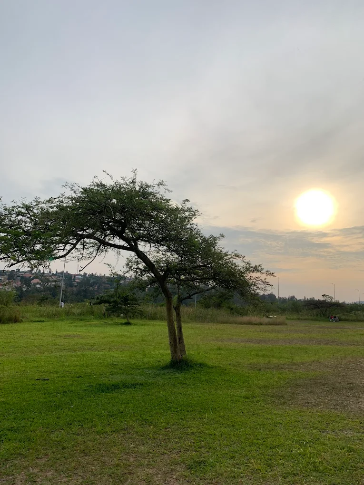
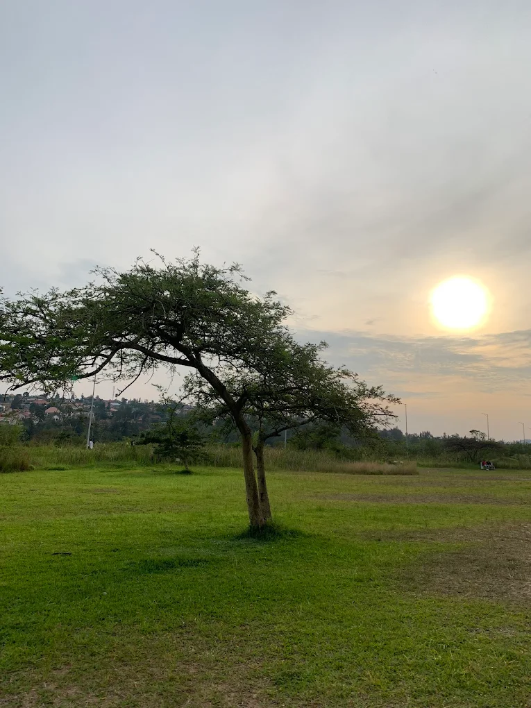
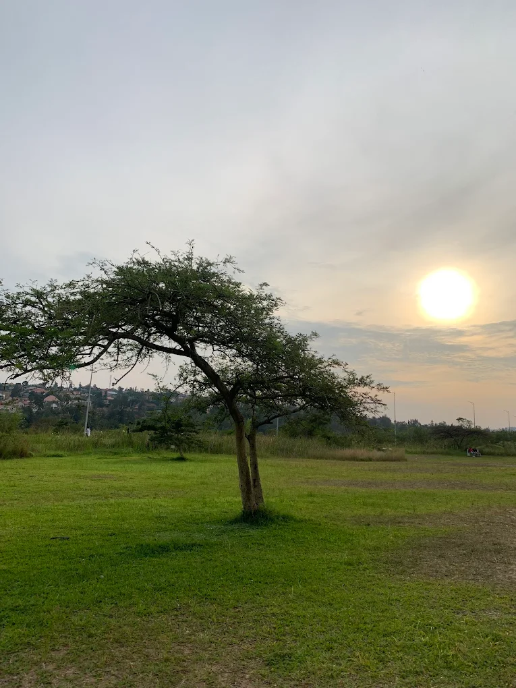
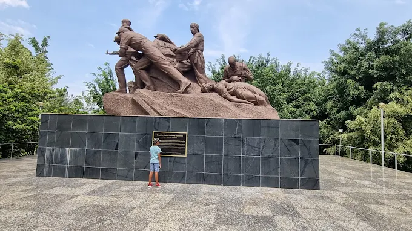
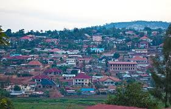
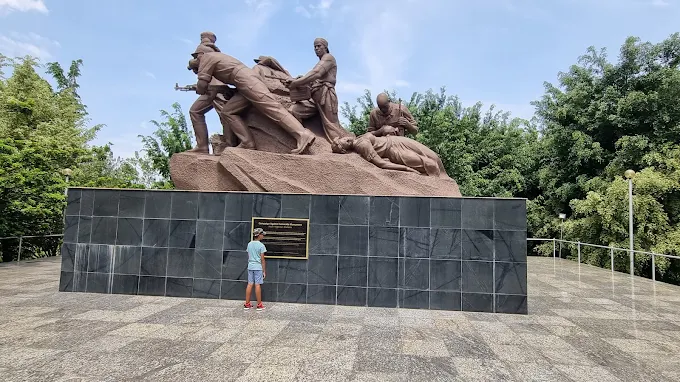
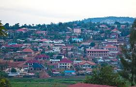

Country: Rwanda
Province: City of Kigali
Area: 134 km²
Population (2022): 374,319
Population Density: Approximately 2,830 people/km²
Administrative Center: Nyarugenge Sector
Sectors (Imirenge):
Cells (Utugari): 47
Villages (Imidugudu): 350
Mayor:Samuel Dusengiyumva
Nyarugenge is the economic heart of Kigali, hosting:
Infrastructure projects like the Agatare Project aim to upgrade informal settlements in areas such as Biryogo, Agatare, Kiyovu, and Rwampara.
The district boasts several educational institutions, including:
Healthcare facilities in Nyarugenge include:

 


